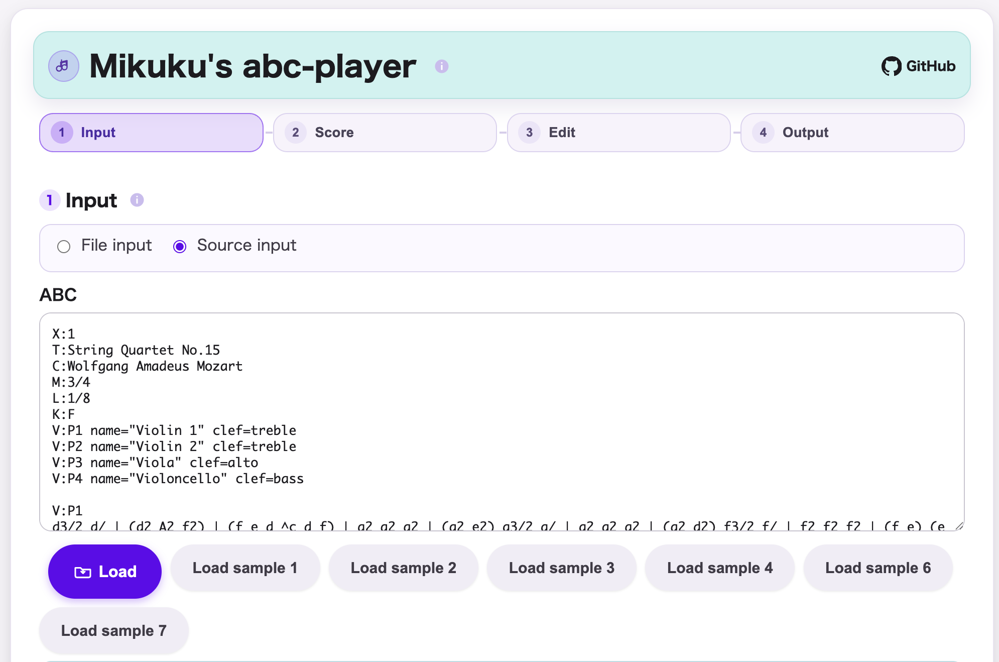
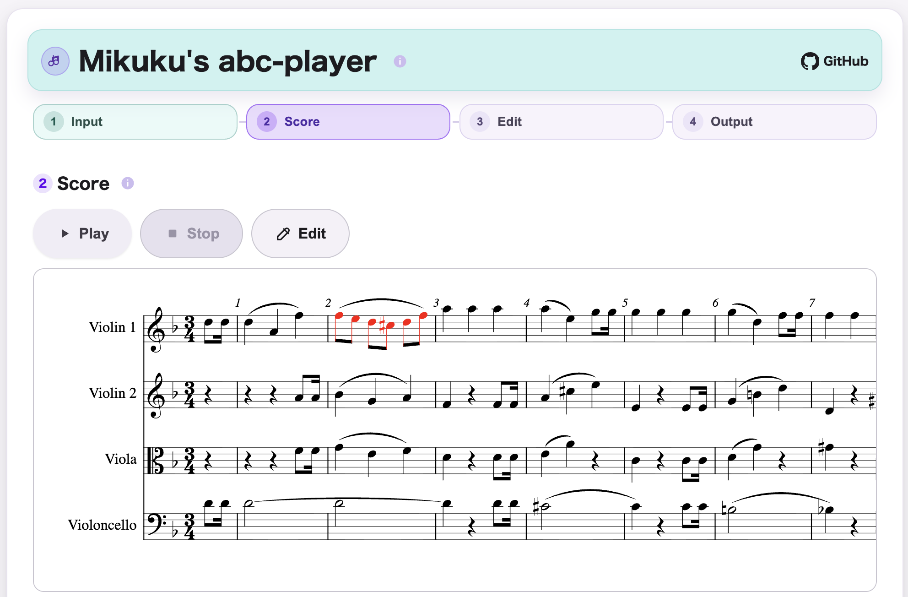
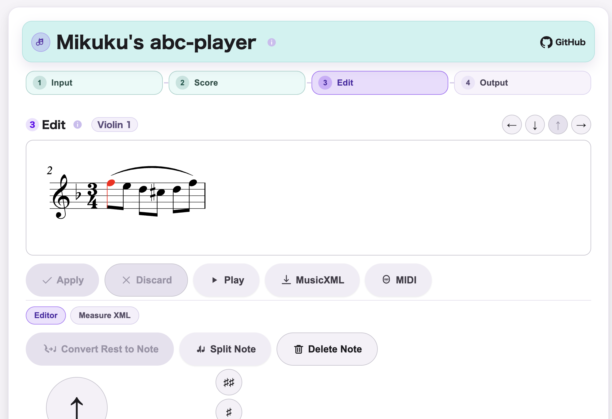
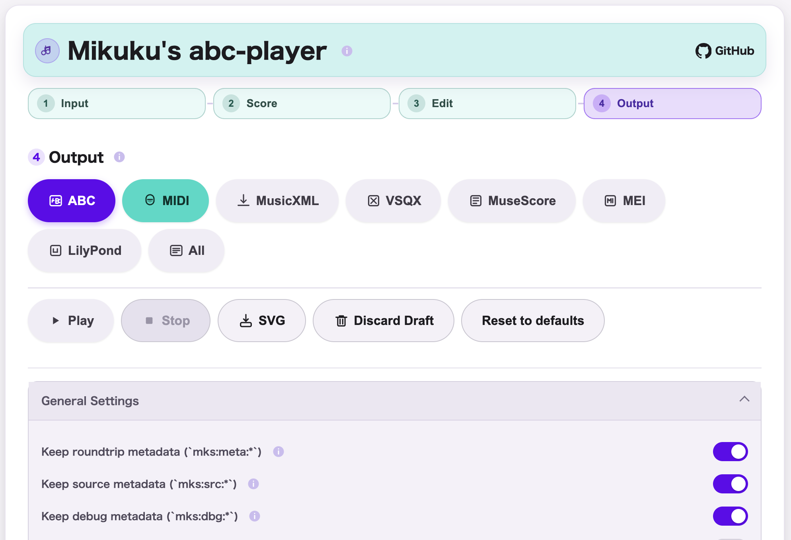

Local Browser Tool
miku-abc-player
Updated: 2026-04-12
What is this?
miku-abc-player is a single-file web app that can load multiple supported formats, open them as ABC, and let you preview, play back, and make lightweight adjustments locally in the browser.
- Runs locally in the browser without server communication.
- Focused on opening supported formats as ABC for playback, preview, and lightweight conversion.
- Derived from
mikuscoreand keeps some lightweight inherited edit and output capability.
Features
- Load ABC from file input or source text.
- Import supported non-ABC files and open them as ABC after MusicXML normalization.
- Preview score rendering in the browser.
- Play back the loaded score locally.
- Use lightweight inherited editing and output functions when needed.
- Use the app as a single self-contained HTML file.
Use Cases
- Paste ABC text and hear it quickly.
- Import an ABC file and verify the result.
- Import a supported non-ABC file and inspect it as generated ABC.
- Preview score rendering before sharing or exporting.
- Make small confirmation-oriented adjustments before replaying.
- Export loaded ABC into MIDI, MusicXML, and other score-related formats when conversion is needed.
How to use
- Open
miku-abc-player.htmlin a web browser. - Load ABC from a file, paste ABC source text, or import another supported format.
- Preview the score and use playback.
- Use lightweight edit or output functions when needed.
How it works
- Load ABC directly or import another supported format in the browser.
- Normalize non-ABC input through MusicXML via reused
mikuscoreassets. - Open the loaded content as ABC.
- Render the score for preview.
- Play back the score locally in the browser.
Screenshots

日本語: ABC を直接入力するか、他の対応形式を読み込んで MusicXML 正規化経由で ABC として開くための Input 画面です。

日本語: 描画された譜面を見て内容を確認し、そのまま簡易再生できる Score 画面です。

日本語: mikuscore 由来の軽量で簡易な編集機能で、音符などの調整を行う Edit 画面です。

日本語: 現在の内容を ABC、MIDI、MusicXML などの譜面関連形式として書き出すための Output 画面です。
What is this?
miku-abc-player は、複数の対応形式を読み込んで ABC として開き、譜面プレビュー、再生、軽微修正をブラウザ内で行える Single-file Web App です。
- ブラウザ内でローカルに動作し、サーバ通信を行いません。
- 対応形式を ABC として開き、再生、プレビュー、簡易変換に使うことを主目的にしています。
mikuscoreをベースにしつつ、軽量な編集・出力機能を一部引き継ぎます。
Features
- ABC ファイル入力と ABC テキスト入力に対応します。
- ABC 以外の対応形式も MusicXML 正規化を経て ABC として開けます。
- ブラウザ内で譜面プレビューを表示します。
- 読み込んだ譜面をローカル再生できます。
- 必要に応じて、引き継いだ軽量な編集・出力機能を利用できます。
- 単一 HTML ファイルとして利用できます。
Use Cases
- ABC テキストを貼り付けてすぐに音を確認したい。
- ABC ファイルを読み込んで内容を確認したい。
- ABC 以外の対応形式を読み込み、生成された ABC として確認したい。
- 共有や書き出しの前に譜面表示を確認したい。
- 再生前に小さな確認用修正を行いたい。
- 必要に応じて、読み込んだ ABC を MIDI や MusicXML などの譜面関連形式へ書き出したい。
How to use
- Webブラウザで
miku-abc-player.htmlを開きます。 - ABC ファイルを読み込むか、ABC テキストを貼り付けるか、他の対応形式を取り込みます。
- 譜面をプレビューし、再生します。
- 必要に応じて軽量な編集や出力機能を使います。
How it works
- ブラウザ内で ABC を直接読み込むか、他の対応形式を取り込みます。
- ABC 以外の入力は、再利用している
mikuscoreアセットを通じて MusicXML に正規化します。 - 正規化後の内容を ABC として開きます。
- 譜面を描画してプレビューします。
- ブラウザ内でローカル再生します。